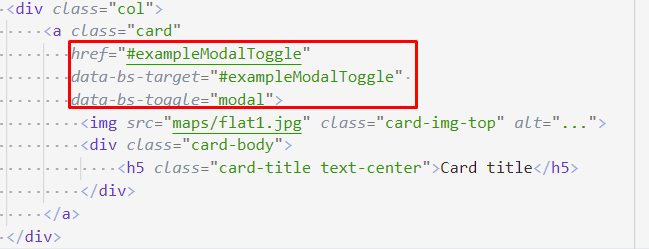
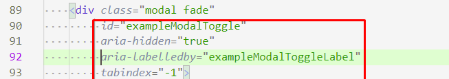
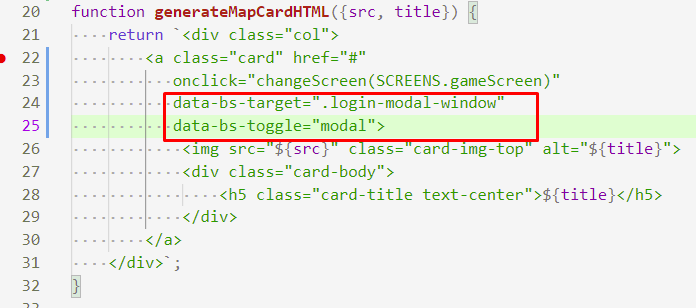
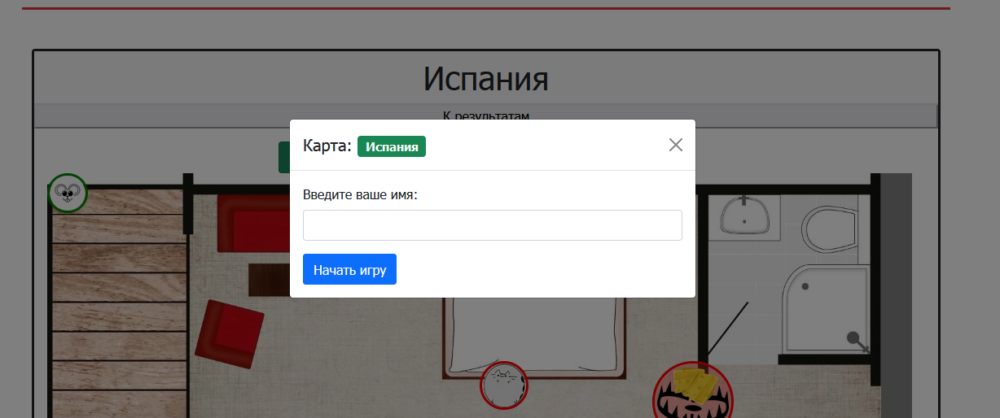

202202151358 Модальное окно с помощью Bootstrap
Что бы реализовать ввод имени нам в первую очередь нужно показать форму, где его можно будет ввести. Для Этого в изначальной верстке есть модальное окно. Которое даже работало за счет JS-скриптов Bootstrap-а и соответствующих атрибутов:
- Так выглядит карточка с картой: 
href=#....- в целом, обычная якорная ссылка к элементу с соответствующимid. Возможно, сделана для совместимости, мало ли JS на странице будет отключен? Тогда, браузеру необходимо будет промотать страницу к форме.data-*аттрибуты служат для того, чтобы добавить кDOM-элементу дополнительную информацию. Префикс-bs-говорит о том, что данные атрибуты для Bootstrap-а.-data-bs-target- видимо, селектор модального окна, которое мы хотим открыть, аdata-bs-toggle` говорит нам о переключении, или типе переключения, которое должно произойти. Видимо, здесь хранится информация о том, что должен произойти показ модального окна.
- Аттрибуты же самого окна, на самом деле сейчас роли для нас не играют: . Нам главным образом интересен такой же
id, как и вdata-bs-target,aria-*же атрибуты мы рассмотрим позже, либо можно изучить их самостоятельно, как и атрибутtabindex.
Что же мы будем с этим делать?
На прошлых этапах мы отказались от тех
аттрибутов, так как не понимали зачем они были нужны. Теперь, мы можем попробовать
вернуть их, но с осознанием что нам достаточно вернуть data-bs-* атрибуты
с новыми значениями:

Обратите внимание, вместо id, мы указали свой class селектор на
тоже самое Bootstrap-окно. Проверяем, и да оно работает. И даже работают все стандартные механизмы Bootstrap (Закрытие модального окна по крестику, и закрытие окна при клике на темный фон):
